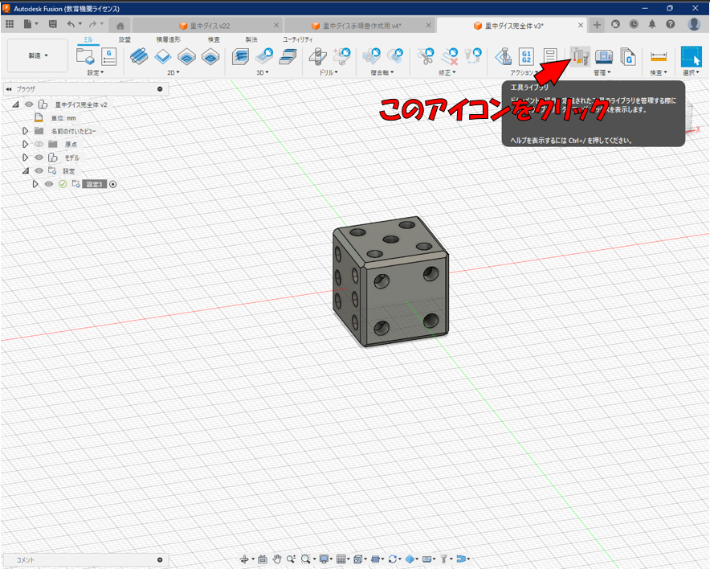
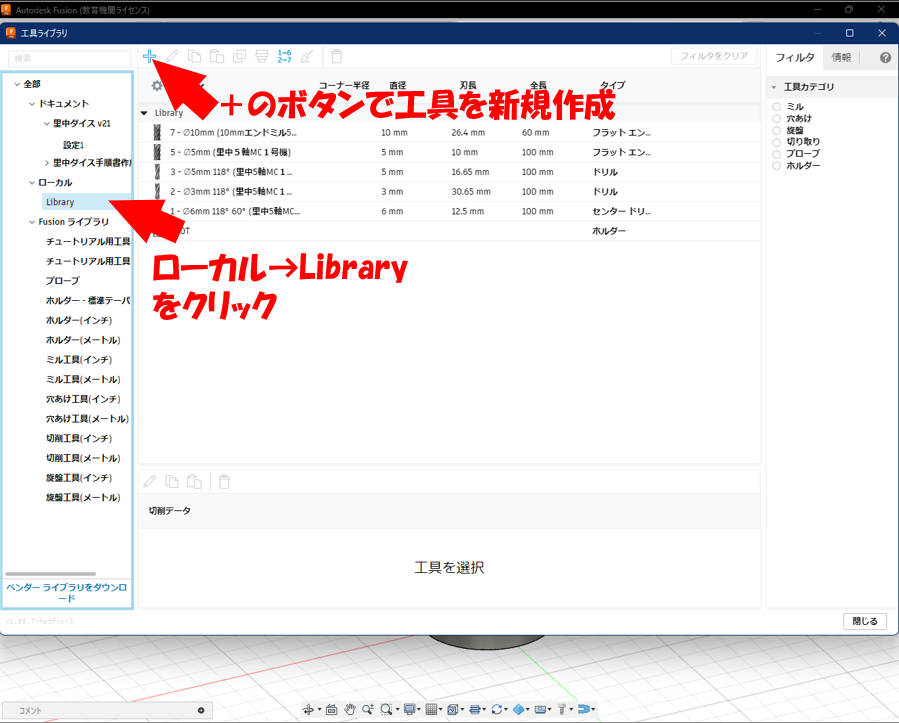
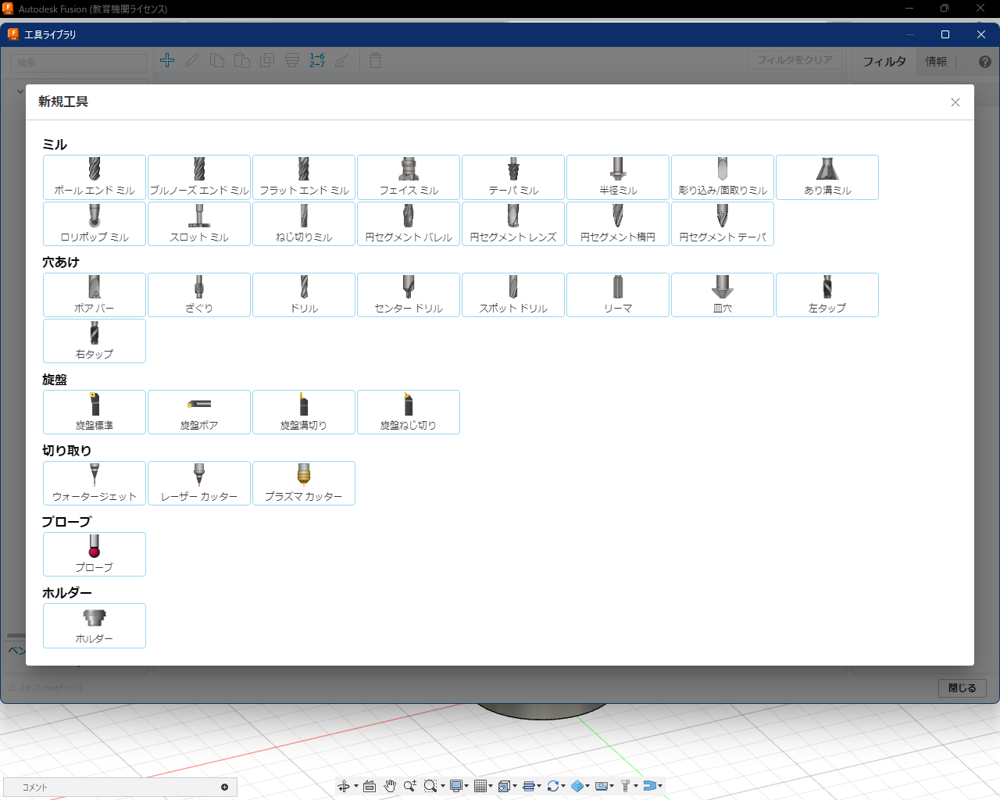
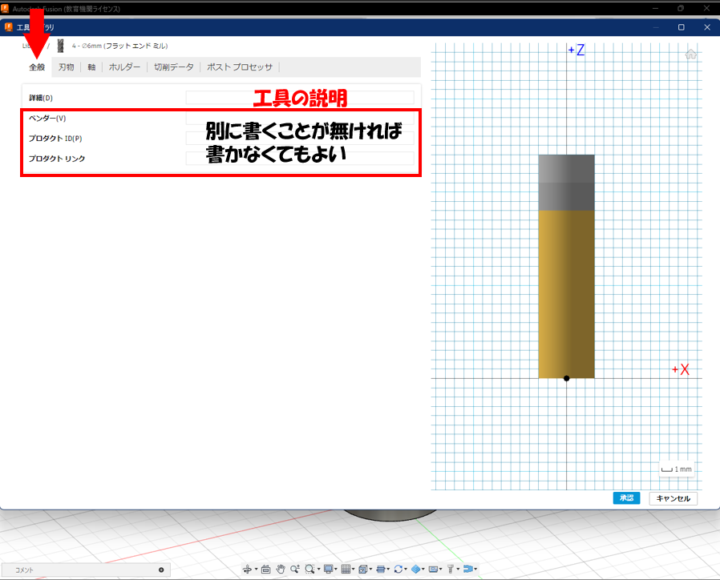
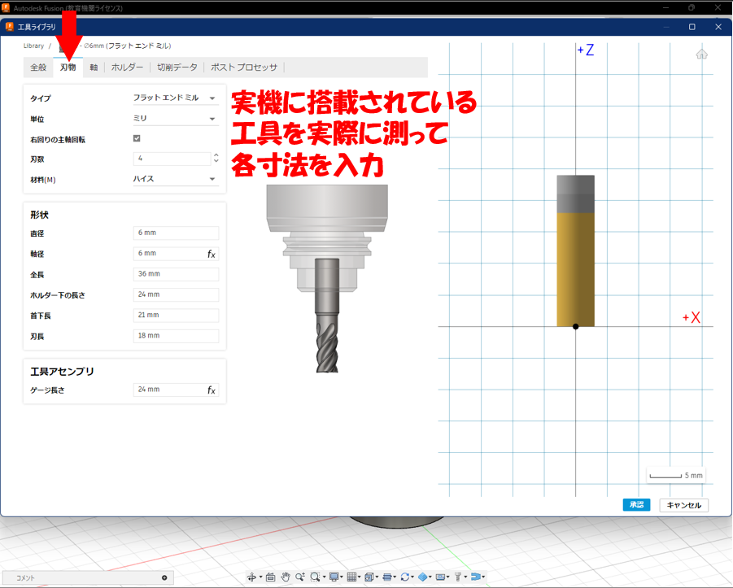
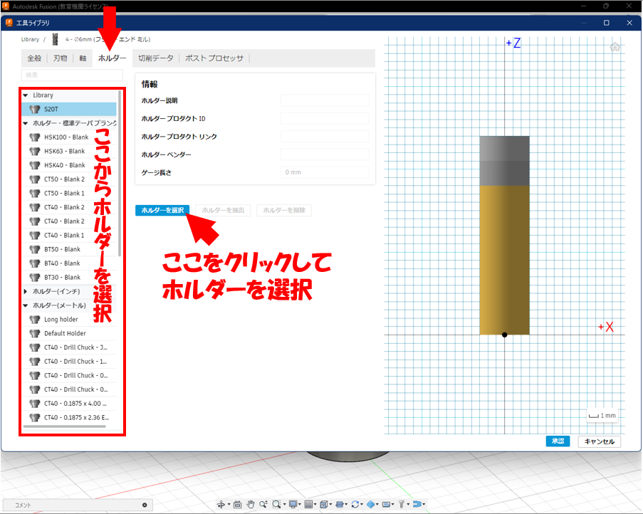
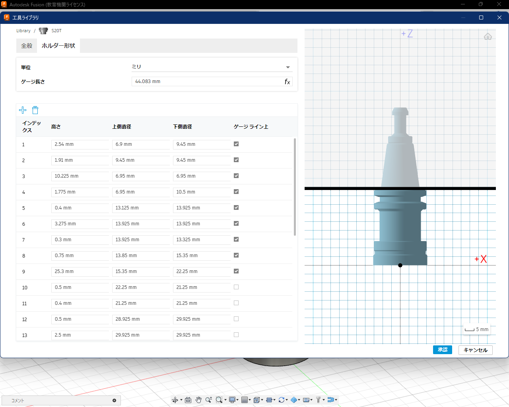
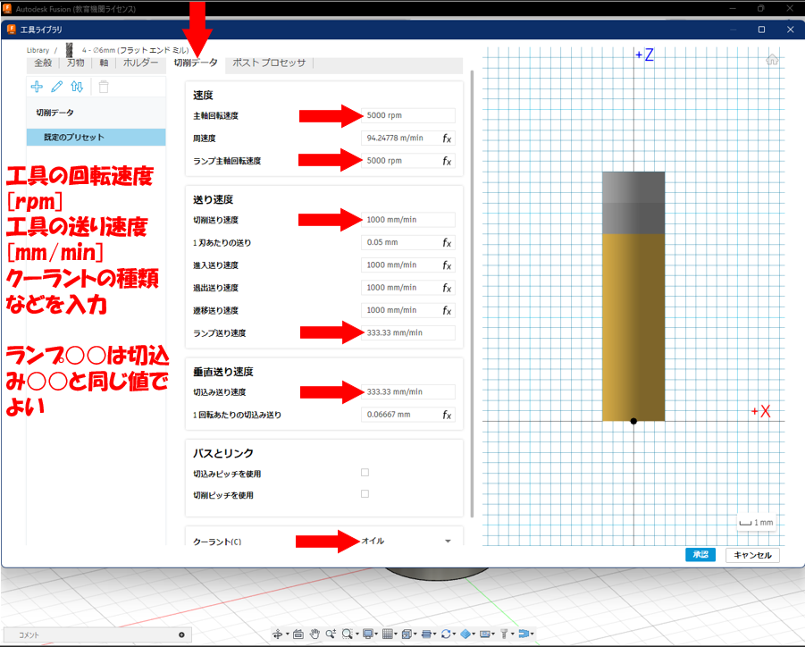
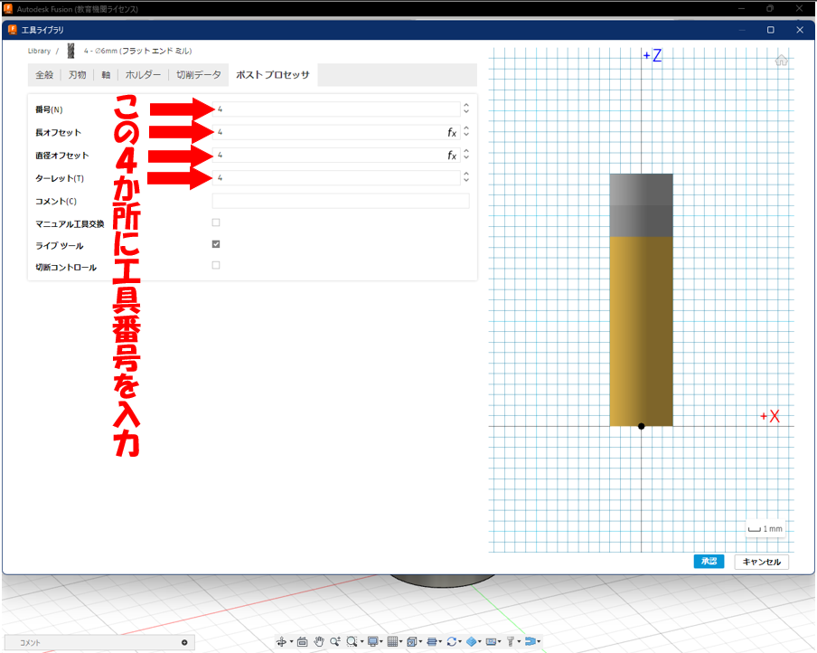

FusionCAMの使い方
工具の新規作成手順
工具の新規作成方法
使用する工具（ドリルやエンドミルのこと。刃物とも言う）を新規作成する方法を説明します。
まず工具ライブラリを開いてください。

工具ライブラリが開いたら、ウィンドウ左側から「ローカル」の下にある「Library」
をクリック。この場所は自分で作成した工具が入る場所となります。ここで＋のマーク
のボタンを押し、工具の新規作成を行います。

まずこの画面が開くので、追加したい工具の種類を選択します。

「全般」タブでは詳細の所に工具の大まかな説明、直径や種類、どの加工機に
使うものなのかなどを入力します。それ以外は特筆すべきことが無ければ何も入力
しなくてよいと思います。

「刃物」タブでは、実際の工具をノギスなどで測定して、各寸法値を入力します。

「ホルダー」タブではその工具が取り付いているホルダーを選択します。
ウィンドウ左のホルダーの一覧から選んで、青いボタンでホルダーを選択します。

また、このホルダーも新規作成することができます。工具の種類を選択する画面
でホルダーを選択し、実際のホルダーの寸法をノギスなどで測定しながらこの
「ホルダー形状」タブで上から順番に高さと上側の直径と下側の直径を指定した
円錐・円柱を重ねていくようにホルダーの形状を作っていきます。
Fusionライブラリに使いたいホルダーがなかったときは新規作成してみてください。

話を刃物の作成に戻して、「切削データ」タブではその工具の回転数や
切削送り速度などを入力する。切込み送り速度は切削送り速度より遅く、
ランプ送り速度はよくわからなかったら切込み送り速度と同じにするとよいと思います。

「ポストプロセッサ」タブでは上から４つの箇所にその工具を加工機に
搭載するときの工具番号を入力してください。
これで工具の作成は終了。工具が複数本ある場合は同じことをまた別の工具で繰り返してください。

著者：伊與田 大斗
（大阪公立大学工業高等専門学校 5年メカトロニクスコース 里中研究室 2025年卒業生）